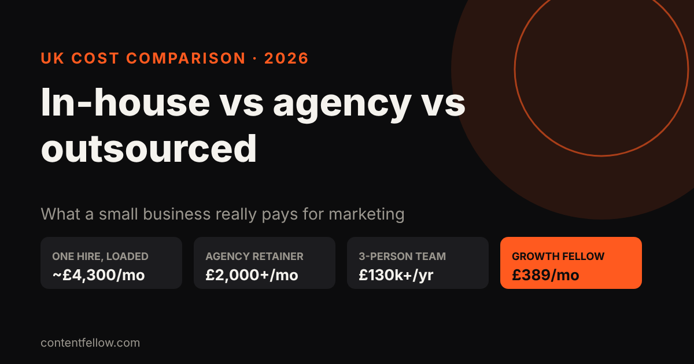
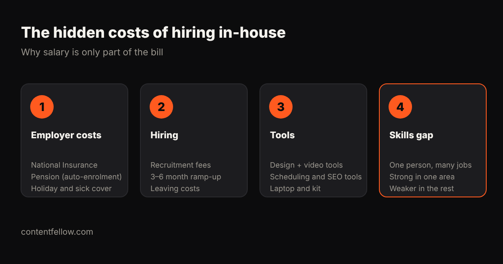

Outsourced Marketing Team vs Agency vs In-House: UK Costs Compared (2026)
Quick answer: A single in-house marketing hire in the UK costs 35–45% more than their salary once you add National Insurance, pension, recruitment, tools and training: a £30,000 content manager really costs about £51,000 a year (£4,300 a month). Specialist agencies typically charge £2,000–£10,000 a month, and a three-person in-house team outside London costs £130,000–£180,000 a year. For small businesses, productised outsourced teams cost far less: ContentFellow's Growth Fellow is £389 a month for five specialists. (Updated October 2026.)

UK marketing costs at a glance
| Option | Typical monthly cost | What you get | Best for |
|---|---|---|---|
| Founder does it | £0 + your time | Whatever you have time for | Very early businesses |
| Freelancers (one per skill) | £300–£1,000 each | Specialist skills, managed by you | Businesses with time to coordinate |
| Specialist agency (one channel) | £2,000–£5,000 | One channel done well (e.g. SEO) | Businesses where one channel drives sales |
| Content or full-service agency | £5,000–£25,000 | Strategy plus several channels | Mid-sized companies |
| One in-house hire | ~£4,300 (loaded) | One generalist, full-time | Businesses with lots of daily marketing work |
| Three-person in-house team | £10,800–£15,000 | A small department | Companies spending £150k+ a year on marketing |
| Productised team (Growth Fellow) | £389 | Five Fellows + a Growth lead | Small businesses wanting a full team on a small budget |
Sources: MarketingMary's UK analysis (2026) gives the 35–45% hidden-cost figure, the £51,000 loaded cost of a £30,000 content manager, the £130,000–£180,000 three-person team cost outside London, and agency ranges of £2,000–£5,000 a month for boutique SEO, £5,000–£10,000 for content agencies and £12,000–£25,000 for full-service B2B agencies.
The hidden costs of hiring in-house

The salary is only the start. On top of it you pay:
- Employer costs: National Insurance, auto-enrolment pension, holiday and sick cover.
- Hiring costs: recruitment fees of £4,000–£5,000 per hire, and a three-to-six month ramp-up before they're fully productive. If they leave, you pay it again.
- Tools: design, video, scheduling and SEO software, plus a laptop and phone. Often £1,500–£2,000 a year.
- The skills gap: one person is rarely great at video, social, web, SEO and analytics at once. You get one strength and four compromises.
That doesn't make in-house wrong. It makes it right at scale: MarketingMary's analysis finds in-house teams become more cost-efficient once annual marketing spend passes roughly £120,000–£150,000.
Agency vs outsourced team: what's the difference?
- A traditional agency usually sells strategy and campaigns on a retainer, often with a 6 to 12 month contract, account managers and monthly meetings. Great for bigger budgets; heavy for a 5-person business.
- An outsourced marketing team gives you the people who do the work (shooting, editing, posting, building, optimising) on a simpler monthly arrangement, often productised with fixed deliverables.
- Freelancers give you specialists, but you become the project manager, which costs your time.
Which option fits your business?
| Your situation | Sensible choice |
|---|---|
| Under £1,000 a month to spend | A productised team or one or two freelancers |
| One channel clearly drives sales (e.g. Google) | A specialist for that channel, plus basics elsewhere |
| £2,000–£10,000 a month, growing fast | An agency or a hybrid: one internal owner plus outside specialists |
| £150,000+ a year and daily marketing work | Start building in-house, keep specialists for gaps |
Whatever you choose, one strategy across channels matters more than the model. Five freelancers each doing their own thing rarely add up to a plan.
What can you get for under £400 a month?
At small-business budgets, the most useful mix is usually:
- Regular content: a monthly shoot and short videos (video production costs, video editing costs)
- Consistent social posting (social media management costs)
- A website that converts and stays updated (website costs)
- SEO and GEO so Google and AI assistants recommend you (GEO vs SEO)
- One monthly report that ties it together
Bought separately from freelancers, that list can easily pass £2,000 a month.
Questions to ask any marketing provider
- Who exactly does the work, and who is my main contact?
- What are the monthly deliverables, in numbers?
- What's the minimum term and notice period?
- Do I own the content, accounts, website and data?
- How do you report results, and how often?
How ContentFellow prices a full marketing team
The Growth Fellow is £389 a month, against £555 for the five Fellows separately, a saving of £166 a month. You get all five specialists (Studio, Creator, Social, Build and Search), a Growth lead who sets one strategy across them, a monthly call and one combined report. Billing is monthly, you approve content before it goes live, and you can change Fellows from the next month.
Free AI visibility check
We ask ChatGPT and Gemini 10 questions your customers ask, and email you who they recommend instead of you, plus the 3 fixes that matter most. Free, within 2 working days.
Frequently asked questions
How much does it cost to hire a marketing manager in the UK?
Expect the real cost to be 35–45% above the salary. A £30,000 content manager costs about £51,000 a year once National Insurance, pension, recruitment, tools and training are included.
Is outsourcing marketing cheaper than hiring in-house?
For most small businesses, yes. In-house teams tend to become more cost-efficient only once marketing spend passes roughly £120,000–£150,000 a year.
How much does a marketing agency cost per month in the UK?
Specialist agencies typically charge £2,000–£5,000 a month for one channel, content agencies £5,000–£10,000, and full-service agencies £12,000–£25,000 or more.
What is a productised marketing service?
A service sold like a product: fixed deliverables at a fixed monthly price, rather than hours or open-ended retainers. It suits small businesses that want predictable costs.
What is a hybrid marketing model?
One person inside the business owns marketing and decisions, while outside specialists do the execution. Many growing UK SMEs use it.
Can a small business have a full marketing team for under £500 a month?
Yes, with a productised service. The ContentFellow Growth Fellow covers shoots, editing, social, website and search for £389 a month.